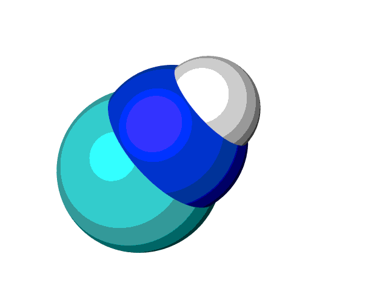

Geometry - Smoothing out a Reaction Coordinate¶
The below code shows how we can smooth out xyz coodinates in a reaction pathway using linear interpolation and procrustes superimposition.
import os
import shutil
from squid import files
from squid import geometry
from squid import structures
from squid.post_process.ovito import ovito_xyz_to_gif
def example_1():
# In this example, we will generate a smooth CNH-HCN isomerization
# guessed pathway
# Step 1 - Generate the bad initial guess
print("Step 1 - Generate the bad initial guess...")
H_coords = [(2, 0), (2, 1), (1, 1), (0, 1), (-1, 1), (-1, 0)]
CNH_frames = [[
structures.Atom("C", 0, 0, 0),
structures.Atom("N", 1, 0, 0),
structures.Atom("H", x, y, 0)]
for x, y in H_coords
]
# Further, randomly rotate the atoms
CNH_frames = [
geometry.perturbate(frame, dx=0.0, dr=360)
for frame in CNH_frames
]
files.write_xyz(CNH_frames, "rotated_pathway.xyz")
# Step 2 - Use procrustes to remove rotations
print("Step 2 - Use Procrustes to remove rotations...")
geometry.procrustes(CNH_frames)
files.write_xyz(CNH_frames, "procrustes_pathway.xyz")
# Step 3 - Smooth out the band by minimizing the RMS atomic motion between
# consecutive frames until it is below 0.1 (with a max of 50 frames).
print("Step 3 - Smooth out the band...")
CNH_frames = geometry.smooth_xyz(
CNH_frames, R_max=0.1, F_max=50,
use_procrustes=True
)
# Save smoothed band
files.write_xyz(CNH_frames, "smoothed_pathway.xyz")
if __name__ == "__main__":
example_1()
Further, we can automate the generation of gifs using the ovitos python interface. Note, this is not always guaranteed to be a pretty image, as you would need to know exactly where to point the camera. In some situations it may be obvious where it should be placed; however, in many we simply recommend opening up Ovito and using their GUI interface directly.
import os
import shutil
from squid import files
from squid import geometry
from squid import structures
from squid.post_process.ovito import ovito_xyz_to_gif
def example_2():
# In this example, we illustrate how we can automate the generation of
# gifs of the reactions in example_1
print("Step 4 - Generating gifs...")
# Generate a scratch folder for image generation
scratch_folder = "./tmp"
if os.path.exists(scratch_folder):
shutil.rmtree(scratch_folder)
print(" rotated_pathway.gif")
os.mkdir(scratch_folder)
ovito_xyz_to_gif(
files.read_xyz("rotated_pathway.xyz"),
scratch_folder, fname="rotated_pathway",
camera_pos=(0, 0, -10), camera_dir=(0, 0, 1))
shutil.rmtree(scratch_folder)
print(" procrustes_pathway.gif")
os.mkdir(scratch_folder)
ovito_xyz_to_gif(
files.read_xyz("procrustes_pathway.xyz"),
scratch_folder, fname="procrustes_pathway",
camera_pos=(0, 0, -10), camera_dir=(0, 0, 1))
shutil.rmtree(scratch_folder)
print(" smoothed_pathway.gif")
os.mkdir(scratch_folder)
ovito_xyz_to_gif(
files.read_xyz("smoothed_pathway.xyz"),
scratch_folder, fname="smoothed_pathway",
camera_pos=(0, 0, -10), camera_dir=(0, 0, 1))
shutil.rmtree(scratch_folder)
if __name__ == "__main__":
example_2()
The rough reaction coordinate with rotations, shown below, would not lend itself to linear interpolation, as neighbouring frames would lead to atoms overlapping.

However, when using the procrustes method we remove the rigid rotation associated with this change of coordinate system, making it appear much better.
Finally, with the added linear interpolations we end up with a smooth reaction coordinate.